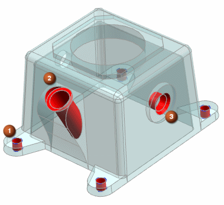

Holes overview
Use the Hole command to add the following types of hole features in a part or assembly:
-
General holes (simple, counterbored, countersunk, or tapered form)
-
Drill Size holes
-
Screw Clearance holes (simple, counterbored, or countersunk form)
-
Threaded holes
|
 |